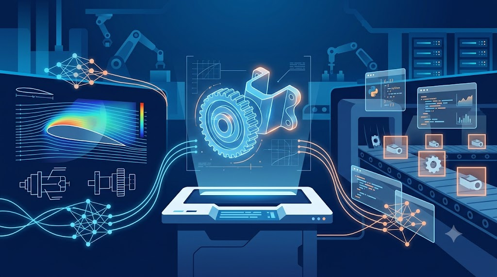
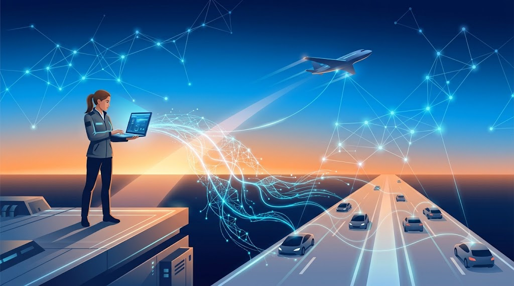

Ben Kimim
Ben Kübra Gezici; makine mühendisliğinin köklü disiplinini yapay zekanın dönüştürücü gücüyle birleştiren, Düzce Üniversitesi mezunu bir mühendisim. Beni tanımlayan şey iki dünya arasında köprü kurabilmem: aerodinamikten üretim hatlarına uzanan geleneksel mühendislik problemlerini, derin öğrenme modelleriyle çözülebilir hale getiriyorum. TUSAŞ LIFT-UP programı araştırmacısı olarak, hedeflenen aerodinamik performansa göre kanat profili geometrisi üreten makine öğrenmesi tabanlı bir tersine tasarım sistemi geliştirdim. Aynı zamanda iki yılı aşkın süredir eğitmenlik yapıyorum — karmaşık teknik konuları anlaşılır kılmak, öğrenmeye olan açlığım kadar işimin de bir parçası.
Yeteneklerim

Fiziksel dünyayı modelleyip yapay zekayla optimize edebiliyorum: SolidWorks ve Siemens NX ile tasarladığım sistemleri ANSYS ve Simcenter ortamlarında analiz ediyor, PyTorch ve TensorFlow ile geliştirdiğim derin öğrenme modelleriyle bu süreçleri akıllı hale getiriyorum. Toyota Boshoku'daki stajımda bu yaklaşımı sahaya taşıdım: YOLO tabanlı gerçek zamanlı hata tespit sistemi "Jidoka 4.0"ı geliştirip FastAPI arayüzüyle tam operasyonel hale getirdim. Üretken yapay zeka (cWGAN-GP) ve fizik bilgili sinir ağları (PINN) gibi ileri yöntemleri gerçek mühendislik problemlerine uyguluyorum. Kodland'da verdiğim Python, makine öğrenmesi ve full-stack eğitimleri ise bana bir mühendisin en az kod kadar değerli becerisini kazandırdı: bilgiyi aktarabilmek. ABD'de geçirdiğim beş ay da bu iletişimi uluslararası bir zemine taşıdı.
Gelecek Hedefim

Kısa vadede havacılık ve otomotiv sektörlerinde, aerodinamik tasarım ve otonom sistemlere yapay zeka entegrasyonu üzerine çalışan bir mühendis olarak yer almayı hedefliyorum. Bu hedefe hazırlanmak için eş zamanlı olarak kendimi geliştirmeye devam ediyorum: T.C. Sanayi ve Teknoloji Bakanlığı'nın Otonom Sürüş Teknolojileri Uzmanlık Programı'na 1000 katılımcı arasından seçilen ilk 120 kişiden biri olarak BAYKAR, TÜBİTAK BİLGEM, FORD ve ASELSAN modüllerinde eğitim alıyorum; Google Yapay Zeka ve Teknoloji Akademisi, Samsung Innovation Campus ve QSummer kuantum programlama programlarıyla da ufkumu genişletiyorum. Uzun vadeli vizyonum ise net: geleneksel mühendislik iş akışlarını yapay zeka ile dönüştüren projelere liderlik etmek ve bu dönüşümün Türkiye'deki öncülerinden biri olmak.